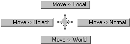

buildMoveOptionsMM
When mapped to a hotkey, builds a marking menu as depicted at right. It activates the Move Tool with the specified option.
The ‘Press’ assignment should be:
buildMoveOptionsMM;
The ‘Release’ assignment should be:
if( `popupMenu -exists tempMM` ) { deleteUI tempMM; }
The Marking Menu is activated with the Left Mouse Button.